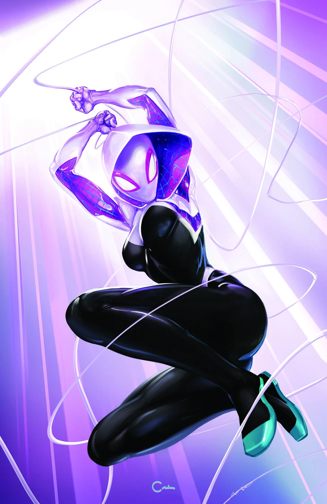

Gwen Stacy
Spider Gwen

Criada pelos escritores Stan Lee e Steve Ditko, aparecendo pela primeira vez em The Amazing Spider-Man #31, em 1965. A versão heroína Spider-Gwen (ou Ghost-Spider) foi criada por Jason Latour e Robbi Rodriguez e apareceu pela primeira vez em Edge of Spider-Verse #2 em 2014. Gwen Stacy é um personagem icônico da Marvel, originalmente introduzida como uma colega e interesse amoroso de Peter Parker (Homem-Aranha) nos quadrinhos. Na versão do universo alternativo Terra-65, ela mesma é mordida por uma aranha radioativa e se torna a heroína Spider-Gwen (ou Ghost-Spider). Gwen é conhecida por sua coragem, habilidades acrobáticas e talento musical como baterista de uma banda.